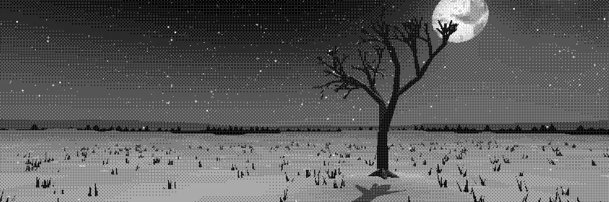

It's been quite a while since I've posted. And in that time, I genuinely lost myself. I'm human after all, huh. I don't know what the future holds now, I genuinely used to be good at predicting the future and now its genuinely all in flux. I hope that's a good sign for transformation, I do know that I am completely done and tired with my old, stagnant, "life" of survival. Maybe I'm changing, maybe this is just a normal part of aging that I was never aware of previously, but I do like it. So many new self-discoveries await me in the future! I do just want to learn and build, apparently that's beautiful to a few people; Good enough for me! I'm building a Game or two now with the extra mental bandwidth I'm getting, maybe I'll finally fix my executive dysfunction too... I know that if I was able to get rid of that, I'd improve so much in such a short time. Maybe I'm just in a bad environment. Who knows, I'm not a psychologist. Cheers, Haha!
